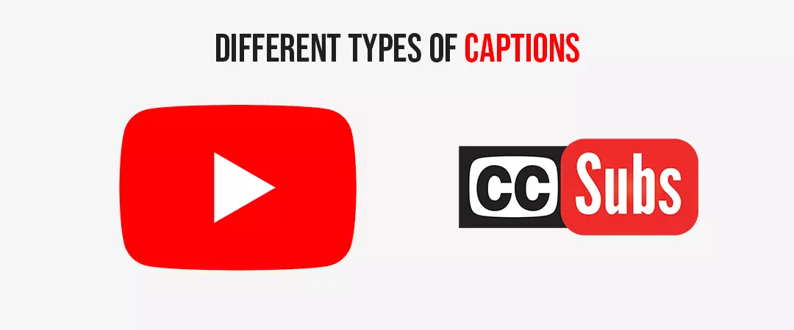
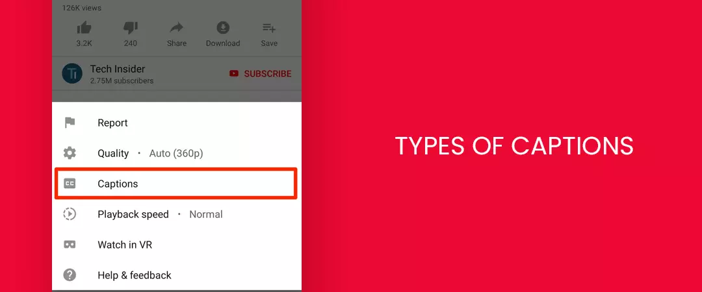
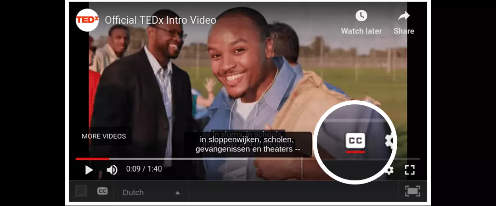
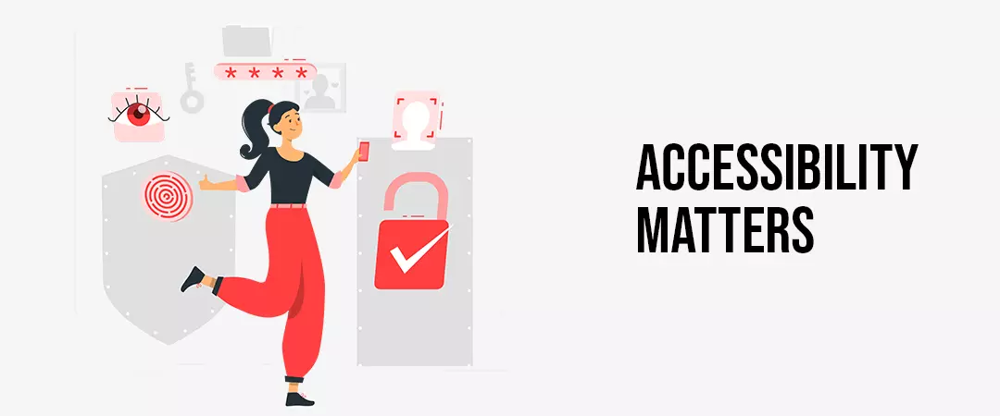
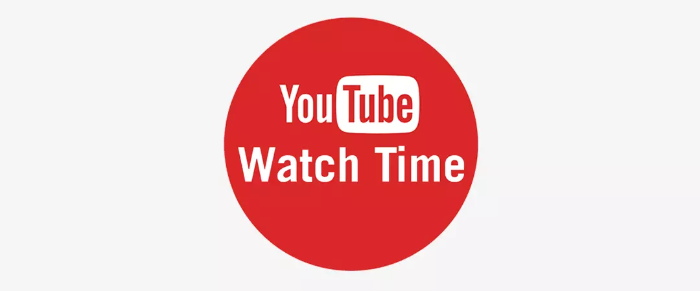
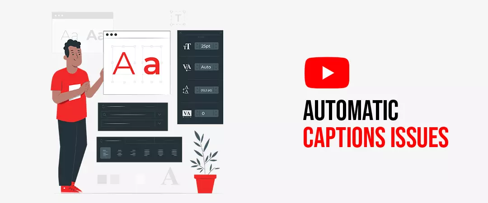
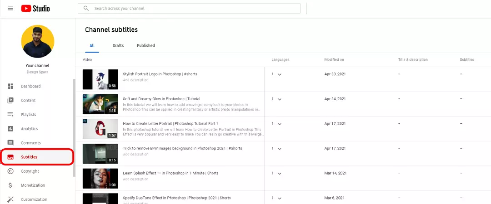
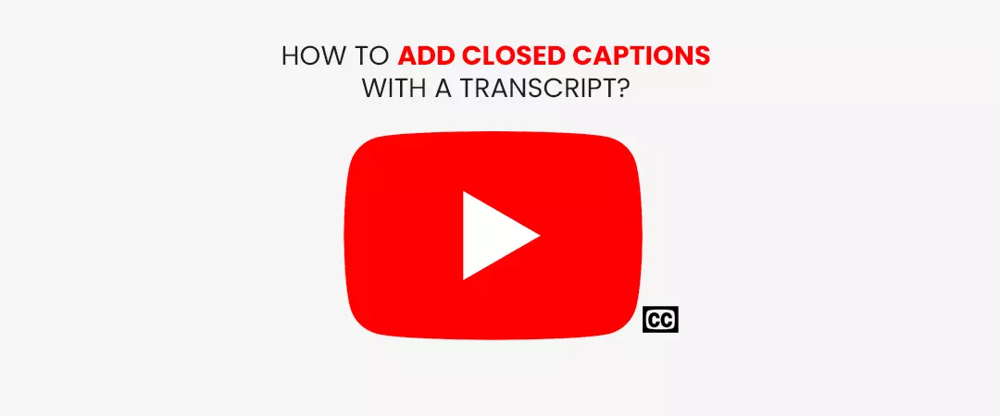
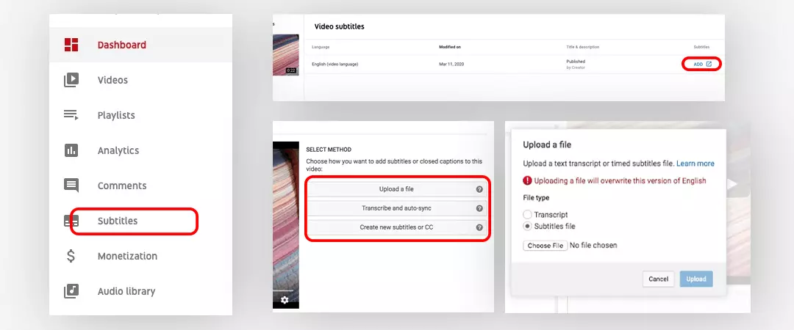

Captions represent additional or interpretive information. They are commonly used as a transcription of the audio regarding avideo, occasionally including descriptions of non-speech elements. Together with subtitles providing a textual alternative language translation of a videos’ primary audio language
In 2009, Google declared that the company was enabling automatic captioning capability to videos on the platform. Before this crucial step was taken, YouTubers could only upload their own captions manually. This innovative structure enabled captions to be automatedlyproduced by artificial intelligence.
Google also made few enhancements to the self-captioning facilities to make it improved. It started helping users to upload a script of the video with automated software that would match the text of the script to the applicable audio segments.
On February 20, 2014, the FCC unanimously approved the implementation of quality standards for closed captioning,addressing accuracy, timing, completeness, and placement (Wikipedia). Closed captions are also helpful in public environments, where patrons may not be able to hear over the background noise. Hence making them content supporters!
Now don’t get confused between Captions and subtitles, we have comprehended this one for you.
Contents
- 1. What are subtitles and captions?
- 2. Different types of captions
- 3. How to turn on the closed caption on YouTube?
- 4. Why captions are important in YouTube?
- 5. You can add captions to YouTube videos using following 2 measures
- 6. Some of the main troubleshoot automatic captions issues
- 7. How to add closed captioning to a YouTube video
- 8. How to add closed captions with a transcript?
- 9. how to upload your own transcription files
What are subtitles and captions?

Subtitles are defined as "transcription, transformation or translation of the YouTube audio segment when sound is available but not understood" by the target viewer. For example, discussion in a foreign language.
On the other hand, captions as "transcription or translation of the dialogue, sound effects, pertinent musical indications, and other relevant audio information when sound is absent or not clearly audible".For example, when audio is muted or the target viewer is deaf or hard of hearing.
Captions are text overlays that help your target audience read what is being said in the video. Although captions are technically different from subtitles, the two terms are apparently interchangeable.
Before, diving in, how to add closed captioning to a YouTube videolet us know a little more about captions.
Different types of captions

-
Open captions
They are the fixed transcription embedded within the video that can’t be removed and which always are in view and cannot be turned off.
-
Closed captions
As their name itself, closed captions can be turned on or off by the viewer.
YouTube automatic captions are produced in English, Dutch, French, German, Italian, Japanese, Korean, Portuguese, Russian, and Spanish.
This platform is by far the greatest prevalent search engine for inspecting a large variety of videos online. In fact, this platform is the second most visited website in existence (behind only Facebook), but also only 15.8 percent of YouTube’s visitors are American. It has versions available in 91 different countries and in 80 different languages which signifies it influences 95 percent of the internet, worldwide (Hootsuite). Hence, it is irresistible to say that your videos need to be as accessible and conceivable as they can be.
How to turn on the closed caption on YouTube?

-
Head to the video that you'd like to watch.
-
If captions are available, will appear on the bottom right-hand corner of the video player.
-
To turn on captions, click .
-
To turn off captions on YouTube, click
Why captions are important in YouTube?
Accessibility Matters

Many people may visit your channel and leave without complaining because of its inaccessibility.
-
According to the world health organization, there are 466 million people around the world who are deaf or hard-of-hearing.
-
Up to 71% of users with disabilities leave a page immediately if it is not accessible, according toresearch from the US Government’s 'Section 508'.
-
According to Babbel magazine, only around 379 million speak English as their first language.
-
According to an exclusive report from JankoRoettgers of GigaOM’sNewTeeVee, a whopping 60 percent of all video views on YouTube come from non-English speakers. it is important for everyone interested in an issue to see the views expressed by consultation respondents.
To get more views
A study by Discovery Digital Networks found that captioned videos saw a 13.48% increase in views within the first 14 days they were published. They measured the lifetime benefit of closed captioning videos to be 7.32% more views on YT than uncaptioned videos.
Captions increase the reach of your videos to get discovered by the target audience by giving them increased rankings on search pages. YT captions are indexed and analysed by YouTube and Google. The algorithm gives more preference to videos that are more informative and lifts them on the search results page.
Optimized text integrated into your videos plays an important role in helping search engines find your content.Your viewership gets even more boosted by translating your captions into other languages.
To get higher search rankings
Search engine optimization is used to promote the rankings of a video. Your videos can benefit from the SEO provided via captions, and get indexed in each language you include. Also, whenYT translates caption as the metadata of your videos,your videosget easily discovered in both the search engines YouTube and Google.
A study by Discovery Digital Networks measured a distinct increase in SEO for YT videos with captions, compared to videos without captions. They concluded that Google indexes closed captions uploaded to videos, which makes them more likely to rank higher in searches for relevant keywords.
You might be interested in reading: How to get higher ranking on YouTube
Help your content reach a wider target audience
According to Google there more than 36 million Americans are deaf or hard of hearing. And about 5% of the global population has some degree of hearing loss. None of those viewers can fully enjoy your videos if they don’t add captions.
Closed captions play an imperative role in providing an equivalent understanding to viewers who cannot hear thesound, hence add captions that are accurate, legible, and synchronized with your video. The more accessible your video gets,the more potential viewers it gains.And yes, investing in video captions to reach that considerable audience is a must for almost every YouTuber now.
Many creators also choose to buy real active YouTube subscribers to gain a wider audience.
You might be interested in reading: How to increase YouTube video organic reach
Let viewers explore videos in more places
According to a study by the United Kingdom’s Ofcom, 80% of people who watch videos with closed captions are not deaf or hard of hearing.
Viewers can also use captions because of disturbances in the background. Your viewers can leverage the feature in crowded areas with noise or while traveling by a train, when studying in a silent library, with a sleeping baby or even at the office! Hence, don’t let their environmentsdecide to make them notwatching your videos, just improvewith captions.
To get higher engagement and watch time

Search engine bots inspect for signals of relevancy remarked by humans. Captions are a great investment in order to increase engagement on your video which is an important performance parameter of the algorithms.
According to Google, captioned video ads enhance video view time by 12% and 80% more people are likely to watch the whole video if it is armed with captions.
You might be interested in reading: How to increase YouTube watch time
Keep scrolling to know, how to add closed captioning to a YouTube video.
Implementation
YT routines a language recognition AI to robotically transcribe captions for your content. Captions’ quality, which is generated by AI is dependent on audio quality.
You can add captions to YouTube videos using following 2 measures
-
YouTube Caption Editor/YouTube automatic captions
If your video’s audio is clear with decent spoken English, you can easily add closed captions on the platform by using theYouTube automatic captions. The machine AI speech recognized & created transcript often have errors; for which YT has provided an edit option that broadens your reach more even further than your inherent language.
-
Use a free service or tool
Closed captioning services providers give visual aid to videos in the form of subtitles, integrating transcribed text from dialogue and sounds as they occur. Companies like; Automatic Sync Technologies, 3PlayMedia, cielo24, and many other captioning service providers can caption videos for free. There are many freemium tools available online that make it easy to caption a video.
Now if you are wondering,how to add auto-generated subtitles on YouTube.We will makethings much easier for you!
YT is continuouslycultivating its speech recognition technology. As automatic captions might misrepresent the vocalized content due to mispronunciations, accents, vernaculars, or background noise. Therefore, make sure you review the automatic captions and edit the parts that haven't been accurately transcribed.
To review automatic captions and make changes, if required:
-
Go to YT Studio.
-
In the left menu, select Subtitles.
-
Select the video you want to add captions or subtitles to.
-
Beneath “Subtitles”, click More next to the subtitles you want to edit.
-
Review automatic captions and edit segments that haven't been appropriately transcribed.
Some of the main troubleshoot automatic captions issues

If you are unable to generate automatic captions for your video, it could be due to one or more of the following explanations:
-
The captions aren't available yet because of the processing intricate audio in the video.
-
Automatic captions don't support the language you used in the video.
-
The video is too lengthy.
-
The video has deprived sound quality or YT doesn't distinguish the speech.
-
There’s a long period of silence breaks/intervals at the commencement of the video.
-
There are numerous speakers whose speech overlays.
How to add closed captioning to a YouTube video
FREE transcription on YouTube

As mentioned earlier, this platform has its own built-in AI mechanism, that captions your videos for free of cost! But as for the robotic concerts, it is not 100% correct. Also, it may have ailing line breaks, no reciter differentiation, with almost no punctuation.
We are here, to sort out the things in your favour:
Step 1- Select the camera icon at the right top corner of the YT webpage and click on Upload Video.
Step 2-In your listing preferences, you get three options – public, unlisted and private. A public video is available in search engines results for all, that is, it is discoverable by the ordinary public passing through your channel. Unlisted videos can be watched by any user with the link but won’t appear on your channel. On the other hand, a private video listing can only be watched by the creator (you).
Step 3- You have to upload your videos on this platform as private or unlisted until captions and subtitles are added. Make sure that the audio quality is good enough for AI to generate accurate transcription.
Step 4-After uploading your video, YT automatically the platform's adds it tot transcription waitlist. Then YT will automatically generate captions, for your content. This process by YTcan even take up to 48 hours to complete.
Step 5-Now, head to YT studio and click Transcriptions.
Step 6- Select the video to which you want to add the caption and language for your caption too.
Step 6-Now to access and edit the closed captions, click on the Subtitles section. Then hit the 3 vertical dots.
Step 7- Select “Edit on Classic Studio”. It will forward your content to another page. Then choose to edit or unpublish the captions. You can also download it under the Actions tab.
Step 8- Edit your subtitles inside the platform or download it and edit in TextEdit on Mac as most users prefer to edit outside YT.
Step 9- Open text editor, and start your editing. You must change or delete the timestamp, except if you are proposing to fix out-of-sync captions.
Step 10- Now save and upload the file back to YT. On the page where you downloaded your captions, find the Actions tab and select Upload File, then choose the edited transcription file, hit Upload.
Now, upload again the video and change the listing preferences to the public!
How to add closed captions with a transcript?

If you have already had a transcript, creating a caption file will be super easy. The very first step towards adding a caption file is to make sure that your audio and video are synchronized. Then you can acquire a transcription of your video from automatic speech recognition software like Speech Notes or Dictation or our Dynamic video-to-text transcription. You can also use software to timecode for you.
Make sure your caption file is configured in one of the following formatsthat YT supports:
-
SubViewer (.sbv)
-
SubRip (.srt)
-
Mpsub (.mpsub), and
-
Videotron Lambda (.cap).
Now, will tell you how to upload your own transcription files

Step 1- Open your YT account and head to YouTube Studio. Then, click on the Videos tab.
Step 2- Select the video to which you want to include captions.
Step 3- Select the Subtitles/CC
Step 4- Click ADD LANGUAGE and select your language.Here, select, the video language you prefer.You can either upload your video transcription file made by software that provides a better transcription accuracy compared to the auto-generated transcript from YT, transcribe your video manually on YT or letit create new subtitles or CC for you.
Step 5-Then after choosing a method, makes changes and click Save. Voila! You just added captions to your video. Then, click on the CC icon in the bottom left corner of the video to inspectthe caption settings while watching your video.
I hope you found this complete guide on YouTube captions and subtitles useful.
Feel free to share!